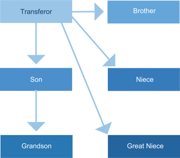
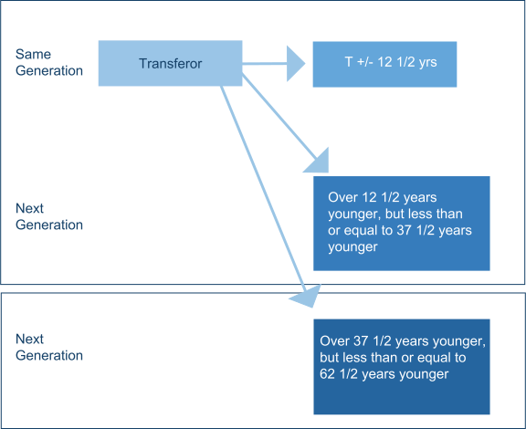

The GST tax applies to transfers of property to individuals who are two or more generations below the person making or triggering the transfer (known as the "transferor"). Generally, the transferor is someone who is making a lifetime gift or a deceased person who is transferring or triggering a transfer at their death.
Individuals two or more generations below the transferor are known as "skip persons," because a transfer to them would "skip" a generation to get to them. Everyone else would be a "non-skip person."
To identify an applicable situation, it is necessary to identify skip persons. Study the chart below carefully. Each arrow represents a possible transfer from the transferor. Move the mouse pointer over each of the persons below to identify if the person is a non-skip person or a skip person.

